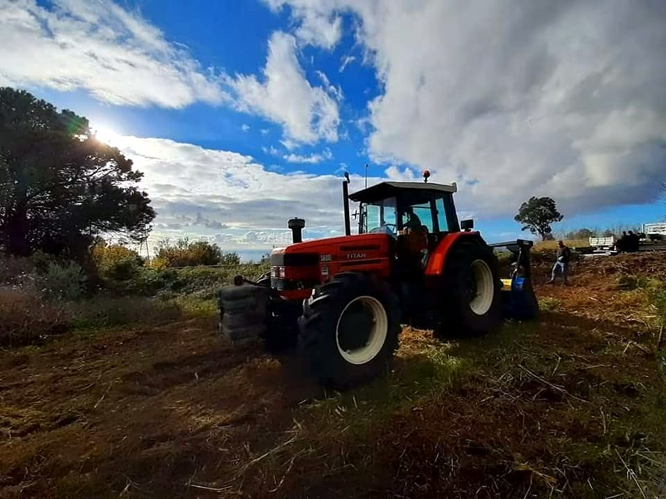
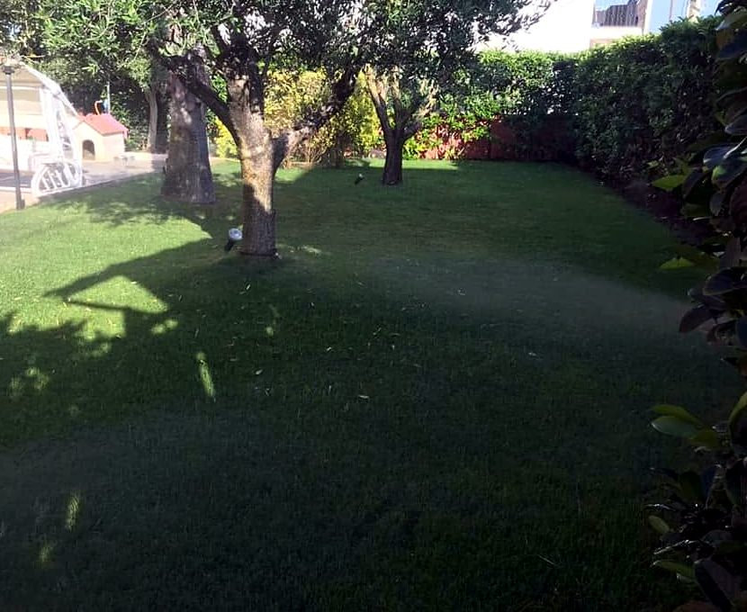
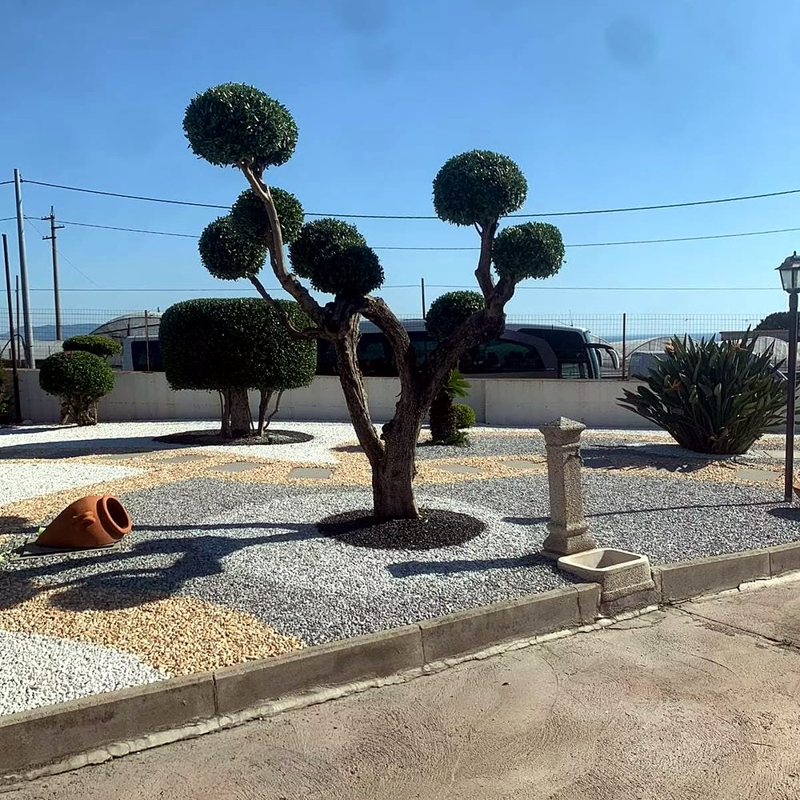

La nostra specialità
Mitigazione di impianti fotovoltaici
Taglio dell'erba sotto e tra i pannelli, pulizia dei moduli e realizzazione di siepi e alberature di schermatura richieste dai Comuni. Impianti puliti, efficienti e in regola.

Manutenzione e progettazione del verde, mitigazione di impianti fotovoltaici e disboscamento di aree incolte, per privati, aziende ed enti pubblici. Da Trecase, in tutta Italia.
Tre ambiti su cui lavoriamo ogni giorno, con personale formato e attrezzature professionali, dai giardini privati alle grandi superfici.
Taglio dell'erba sotto e tra i pannelli, pulizia dei moduli e realizzazione di siepi e alberature di schermatura richieste dai Comuni. Impianti puliti, efficienti e in regola.

Pulizia e bonifica di terreni abbandonati con trattore da 130 cavalli, trinciatrici forestali e biotrituratore per lo smaltimento del materiale vegetale.

Impianti di irrigazione automatici, prati da semina e a pronto effetto, cura del manto erboso: un giardino bello da vedere e semplice da mantenere.
Dalla siepe di casa al parco pubblico, ci occupiamo di ogni fase: progetto, realizzazione e manutenzione nel tempo.

Nel grande parco urbano di Salerno abbiamo curato, per conto di GM Costruzioni, la parte a verde dei lavori: prati, aiuole e nuove alberature che oggi accolgono ogni giorno famiglie e passanti.
Progettazione e realizzazione degli spazi verdi.
Manutenzione ordinaria e straordinaria delle aree verdi e degli impianti di irrigazione.
Manutenzione delle aree verdi pubbliche.
Mitigazione ambientale e manutenzione del verde di parchi fotovoltaici.
Partiamo dalla Campania e raggiungiamo i cantieri ovunque servano, con la nostra squadra e i nostri mezzi. Abbiamo progettato e realizzato spazi verdi anche all'estero, in Irlanda.
Giardini, potature, prati e lavori in altezza. Tocca una foto per ingrandirla.
Il lavoro con il verde, da noi, passa di generazione in generazione. Nel 2019 Ciro Annunziata ha raccolto questa esperienza nella sua impresa, che oggi si occupa del verde a 360 gradi: manutenzione, progettazione, potatura, realizzazione di giardini e cura di parchi e aree verdi.
Negli ultimi anni ci siamo specializzati nella mitigazione delle aree verdi dei parchi fotovoltaici, per impianti sempre puliti, efficienti e in regola. Nel nostro team lavorano anche paesaggisti, per progettare spazi belli, funzionali e sostenibili.
Per privati, condomini, aziende, enti pubblici, hotel e strutture ricettive.
Veniamo a vedere lo spazio e ascoltiamo cosa ti serve.
Di solito in un paio di giorni ricevi una proposta chiara e senza impegno.
Organizziamo il cantiere e lo portiamo a termine con il nostro personale.
Contratti di manutenzione programmata e interventi urgenti quando servono.
Raccontaci di cosa hai bisogno: ti ricontattiamo per fissare un sopralluogo.